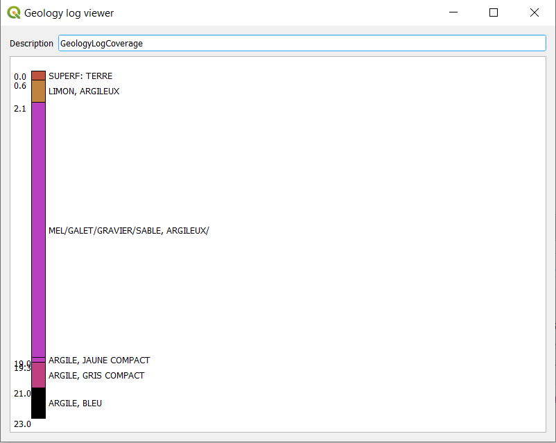

XML Mode - local test scenario¶
This scenario uses files stored on GitHub to avoid potential content negociation issues (network issues) with data servers
1. Add a WMS background image¶
Whatever suits you, provided the entire world is visible (will help detect X/Y Axis being flipped).
2. Initial information seed¶
Copy the URL to the initial information seed:
https://raw.githubusercontent.com/BRGM/gml_application_schema_toolbox/master/tests/basic_test_scenario/0_BoreholeView.xml
Then:
Load wizardFile/Url>Load in XML ModeXML Options : None
Expected result: 1 new QGIS layer (BoreholeView (shape))

Using the QGIS tool Identify Features on the point added, features attributes from the GML shall be displayed.
3. Dereferencing vocabulary¶
On INSPIRE registry¶
Locate gsmlp:purpose/@xlink:href and:
Right clickResolve external>Embedded
Expected result: the content of the attribute shall be enriched with content coming from the INSPIRE registry

On OGC definition server¶
Proceed as above on attributes having xlink:href starting with http://www.opengis.net/def/.
On EU geological surveys linked data registry¶
Proceed as above on attributes having @xlink:href starting with http://data.geoscience.earth/ncl/.
4. Dereferencing a 1st feature (a geological log)¶
Locate gsmlp:geologicalDescription/@xlink:href and:
Right clickResolve external>Embedded
Expected result: the content of the attribute shall be enriched with sos:observationData.
Open one of them and expand the om:OM_Observation then the om:result -> the Geology log viewer icon shall be proposed

Use the Geology log viewer¶
Clicking on the icon next to GW_GeologyLog shall launch the Geology log viewer (preconfigured to render OGC:GroundWaterML2.0 GeologyLogCoverage compliant content):

5. Dereferencing another Feature (a GroundWater Quantity Monitoring Facility)¶
Locate gsmlp:groundWaterLevel/@xlink:href:
Right clickResolve external>As a new Layer> TickingSwap X/Y
Expected result: two new QGIS layers (EnvironmentalMonitoringFacility (geometry) and EnvironmentalMonitoringFacility (representativePoint))
Using the QGIS tool Identify Features on the point added, features attributes from the GML shall be displayed.
6. From the Monitoring facility access groundwater observation¶
Dereferencing hasObservation (the one whose title is 6512X0037 groundwater quantity observation collection (SOS and WaterML 2.0 format)).
Locate ef:hasObservation/@xlink:href and:
Right clickResolve external>Embedded
Expected result: the content of the attribute shall be enriched with sos:GetObservationResponse
Expending the om:OM_Observation then the om:result -> the Timeseries viewer icon shall be proposed

Use the Timeseries viewer¶
Clicking on the icon next to wml2:MeasurementTimeseries shall launch the TimeSeries viewer (preconfigured to render OGC:WaterML2.0 Part 1 Timeseries compliant content):

7. From the Monitoring Facility add the GroundWater ressource monitored¶
Locate ef:observingCapability/ef:ObservingCapability/ef:ultimateFeatureOfInterest/xlink@href and:
Right clickResolve external>As a new Layer
Expected result: 1 new QGIS layer GW_ConfiningBed (shape).
Move it under the other features using the ‘Layers Panel’ for better visibility:

8. interrogate the GroundWater ressource monitored¶
Using the QGIS tool Identify Features on the point added, features attributes from the GML shall be displayed according to OGC GWML2 Model.